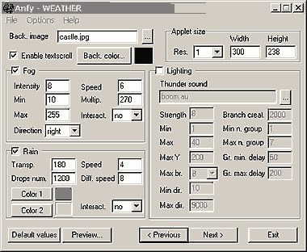

|
[More technical
information about available parameters can be found here.]
Most parameters are self-explanatory and you can
always see brief description of each parameter by moving the mouse
pointer over the wizard.

Basic settings
Select the Background image file. The applet
size is automatically set according to the background image size
and the number of resolution, which works as a zooming factor.
Although you could manually edit the applet's width and height,
it is not recommended to do so. Check out Enable textscroll
box, if necesasry.
Fog
When the Fog box is checked, you could set
the initial Fog Intensity value, and Min and Max
fog intensity values from [0, 256] . The value 0 means no fog, while
256 is fully white fog. Next, enter any positive value at Fog
Speed box, and choose a Fog Multiplier value from [1,
512]. The lower the multiplier value is, the lesser fog consistency.
You could select the Fog Direction from the pull-down menu.
Finally, there are three interaction modes available:
- "no" for no fog user interaction.
- "in" the fog will start when the mouse pointer
is over the applet area.
- "out" the fog will stop when the mouse pointer
is over the applet area.
Rain
Rain box enables/disables rain effects. The
Transparency value may take any number from [1, 255], and
controls rain intensity. Lower values will make the rain less visible
and more transparent. Set Rain Drops Number, Rain Speed,
and Difference of Speed of Drops. You could select two Rain
Colors which define the range of rain color change. Finally,
there are three interaction modes available:
- "no" no user rain user interaction.
- "in" the rain will start when the mouse pointer is
over the applet area.
- "out" the rain will stop when the mouse pointer is
over the applet area.
Lightning
Lightning box enables/disables lightning effects.
If you want, you can set a sound file for the thunders secifying
an 8bit 8Khz mono .au file in the Thunder Sound box. The
value for Strength defines the average lightning size in
pixel. Optionally, you could limit the Min and Max
lightning sizes. The MaxY value defines the maximum y position
reachable by the lightning, from top to bottom. Min and Max Direction
Speed Change values control how the lightning changes its direction.
Branch creation value controls how frequently the
lightning branches. With Min and Max Number of Group
values, you could set the min and max number of lightnings for each
lighnings group. Group Min and Max Delay values
decide the min and max delay of time (with no lightnings) between
each lighnings group.
Proceed to
the textscroll menu if you have checked the textscroll box;
otherwise go to the expert menu.
|